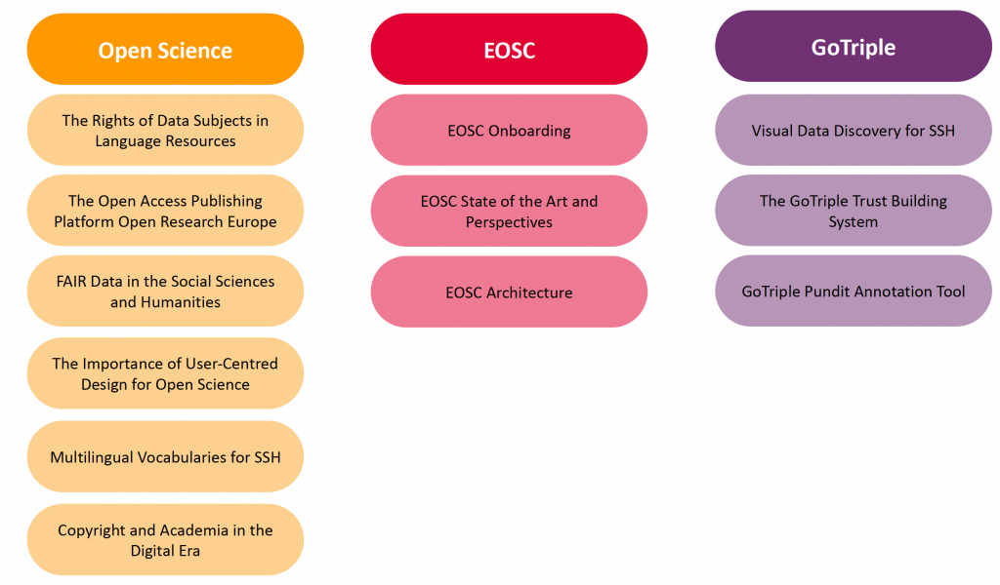

The TRIPLE Open Science Training Series is a series of 12 open and reusable training events specifically designed to upskill researchers in FAIR and Open Science. The training ran from March 2021 to June 2022 and focused on Open Science and EOSC related topics as well as on GoTriple services.

CLARIN Café on the rights of data subjects in language resources
This webinar is part of the TRIPLE Open Science Training Series and was organised as a joint collaboration between CLARIN and the TRIPLE project.
In this training session Paweł Kamocki, chair of the CLARIN Committee for Legal and Ethical Issues (CLIC), Aleksei Kelli, former chair of the CLIC, and Esther Hoorn, member of the CLIC and legal advisor at the University of Groningen, focus on one of the central elements of the General Data Protection Regulation (GDPR) which entered into application on 25 May 2018: the rights of data subjects in language resources.
Francesca Frontini, member of the CLARIN Board of Directors, initiates the webinar with a short introduction of CLARIN ERIC and the TRIPLE project. Paweł Kamocki subsequently provides an overview of the legal framework governing personal data processing in the European Union. The rights of data subjects are divided into restraining and non-restraining rights and are presented by Aleksei Kelli and Paweł Kamocki. Esther Hoorn then shares her perspective on the rights of data subjects in academic practice and showcases examples on the responsibility for handling requests from data subjects in research projects, the exercise of rights in pseudonymised datasets, and transparency regarding the limited nature of rights of data subjects in a research context.
You can download the slides here: CLARIN Café on the Rights of Data Subjects in Language Resources
Francesca Frontini – Introduction to CLARIN and TRIPLE project – CLARIN Café 30.03.2021
Paweł Kamocki – Introduction to the rights of data subjects – CLARIN Café 30.03.2021
Aleksei Kelli – Non-restraining rights of data subjects – CLARIN Café 30.03.2021
Paweł Kamocki – Restraining rights of data subjects – CLARIN Café 30.03.2021
Esther Hoorn – Rights of data subjects in academic practice – CLARIN Café 30.03.2021
CLARIN Café on the Rights of Data Subjects in Language Resources 30.03.2021 – Discussion
TRIPLE TRAINING on Open Research Europe
The training session focuses on the Open Access Publishing Platform Open Research Europe (ORE) and is jointly presented by Emma Lazzeri, Open Science researcher at GARR and ISTI-CNR, and Ilaria Fava, Project Officer in the field of Open Science at the Goettingen State University Library (UGOE).
Emma Lazzeri first presents Horizon Europe and the European Commission’s strategy for assessing research in the Open Science era. Ilaria Fava then provides technical details on how the ORE platform works and how researchers will benefit from it. The session concludes with a walkthrough of the platform.
You can download the slides here: https://doi.org/10.5281/zenodo.4707975
TRIPLE Training on EOSC Onboarding
The training session is dedicated to the EOSC onboarding and is led by Carsten Thiel, Chief Technical Officer at CESSDA ERIC and Joshua Tetteh Ocansey, Technical Officer at CESSDA ERIC.
In this webinar the speakers explore the question “How does a service provider get onboarded and listed on the EOSC marketplace?”. They specifically provide assistance to service providers in sharing services via EOSC with the EOSC Portal and introduce them to some of the benefits of the EOSC Portal. The minimum criteria to become a provider and the requirements to onboard services into the EOSC Portal are presented, as well as the EOSC onboarding process. This training session also gathers requirements from the TRIPLE project in order to take them into account for the next iteration of the Portal development.
You can download the slides here: https://doi.org/10.5281/zenodo.5036684
TRIPLE Training on EOSC: State of the Art and Perspectives
Suzanne Dumouchel, Head of European Cooperation at Huma-Num (Paris) and member of the Board of Directors of the EOSC Association, presents the latest stages of development of the EOSC and the next steps towards the EOSC implementation.
In this training session Suzanne Dumouchel delves into the details of the EOSC ecosystem and focuses more specifically on its actors, the EOSC Partnership, the EOSC Association governance and EOSC projects. She also provides knowledge on how to contribute to the EOSC, in particular through the EOSC Association Task Forces and the ESFRI Science Clusters. Finally, the strategy of EOSC Future and the benefits it will provide to service providers and researchers are presented.
You can download the slides here: https://doi.org/10.5281/zenodo.5045044
TRIPLE Training on FAIR Data in SSH
The training session is dedicated to FAIR Data in Social Sciences and Humanities and is held by Elena Giglia, Head of the Open Access Office at the University of Turin and member of the Executive Assembly of OPERAS.
Elena Giglia first casts light on what is meant when talking about data in the SSH field. She provides an overview of the FAIR principles and presents many helpful tools for researchers to make their data FAIR. Finally, she introduces the responsible management of FAIR data and how this good practice is reflected in the Data Management Plan.
You can download the slides here: https://doi.org/10.5281/zenodo.5510388
TRIPLE Training on the EOSC architecture
The training session is dedicated to the EOSC Architecture and is presented by Ville Tenhunen, Data Solutions Architect at the EGI Foundation.
Ville Tenhunen first presents the EOSC and its ongoing developments. He provides an overview of the EOSC Architecture principles, of the EOSC Future guiding principles and of the Minimum Viable EOSC. The main components of the EOSC Architecture are then introduced, along with a detailed view of its layers. Ville Tenhunen describes the components of the EOSC Architecture and more specifically EOSC Core, EOSC Exchange, EOSC Support Activities and the EOSC Interoperability Framework. He explains the scope and purpose of the EOSC Interoperability Framework and its importance in federating the services that will compose the EOSC. The problems encountered on the way to achieving technical, semantic, organisational and legal interoperability are highlighted and recommendations are presented for each aspect. Finally, the speaker introduces the requirements to become a service provider in the EOSC, such as for example the obligation for services to be accessible to users outside of their original community.
You can download the slides here: https://doi.org/10.5281/zenodo.5566572
TRIPLE Training on visual data discovery for the SSH context
The training session is dedicated to Visual Data Discovery in the Social Sciences and Humanities (SSH) and is presented by Michela Vignoli, Community Manager at Open Knowledge Maps, the world’s largest visual search engine for scientific knowledge.
Michela Vignoli starts the training session with a warm up discussion on discovery challenges in the SSH. A recurring issue researchers are confronted with when performing research on an unknown topic is the lack of visibility of research outputs. In that regard, both knowledge maps and streamgraphs can prove to be useful tools for SSH researchers.
Michela Vignoli offers an explanation on the different applications knowledge maps and stream graphs can have. She illustrates these differences through two live tutorials on the discovery features of the GoTriple platform so as to enable attendees to understand how to visually explore research topics with GoTriple and how to recognise trends in research with GoTriple.
You can download the slides here: https://doi.org/10.5281/zenodo.5795376
TRIPLE Training on the importance of user centred design for Open Science
This training event is devoted specifically to giving an understanding of the importance of the co-design process and the impact it has on the development of digital tools such as the GoTriple Discovery platform. It provides insight on the importance of end-user needs in the design of a discovery platform, the methods used in the TRIPLE Project to consider user-needs and showcases the next steps for the GoTriple platform now that the Beta version is released.
The training session is dedicated to User-Centred Design for Open Science and is presented by Paula Forbes, a cross-disciplinary researcher on User research who works across Social Science, Computing Science & Life Science and is based at Abertay University.
The training starts with an open question to the participants on what they consider to be the main aims of user-centred design.
Paula Forbes then explains that the user-centred approach involves users in the design process to see how associate services can support user goals. As such, it is important to get a deep understanding of the end users in an iterative process.
Paula Forbes illustrates the process through the work carried out with end users to design the Gotriple platform: The work started with understanding the context of use and user requirements, and then moved forward with the production of design solutions. Then, the design was evaluated against user requirements and a successful design solution was decided upon. It was highlighted that this process is far from linear and should be repeated until a suitable solution is agreed on.
Paula Forbes also demonstrates how user requirements are defined through the creation of personas (“user archetypes” that help make decisions about design solutions that are informed by a user driven perspective) and scenarios (narratives of the personas interacting with the future service) and are then prioritised among them.
Finally, 2 methods are presented and compared: the Cognitive Walkthrough method and the Artefacts Ecology Mapping which were used to understand how the GoTriple platform could be of benefit for end users.
You can download the slides here: https://doi.org/10.5281/zenodo.6207721
TRIPLE Training on the Trust Building System
This training event is devoted specifically to getting acquainted with the GoTriple Trust Building System (TBS), a tool that enables SSH researchers to find reliable partners and connect with them through their network.
__________________
This webinar is part of the TRIPLE Open Science Training Series.
The training session is dedicated to the GoTriple Trust Building System (TBS) and is led by Maxime Bouillard and Gaël van Weyenberg, co-founders of MEOH, a nonprofit think-and-do tank established in Brussels which is dedicated to studying how human trust can inform new models of cooperation and governance They are currently focused on the development of the TBS, a platform for users to connect to reliable partners.
The TBS was co-designed through workshops with various stakeholders and will be one of the innovative services of the GoTriple Discovery Platform.
In this session, the presenters involve a set of “testers” from the audience to collect their feedback on their experience in using the TBS. Maxime Bouillard and Gaël van Weyenberg present the TBS through a short live demonstration to showcase features of the TBS such as the network, the news feed, the group chat, the profile section and notifications to keep track of your network’s activity from users’ GoTriple profile.
A dedicated time for engaging with the audience in the last part of the session enables other attendees to take part in the discussion, have their questions answered and create a profile on the TBS and start using the application.
You can download the slides here: https://doi.org/10.5281/zenodo.6367121
TRIPLE Training on multilingual vocabularies for SSH
This training event from the TRIPLE Project was jointly organised with the SSHOC Project and was dedicated to the creation, use and management of controlled vocabularies in the SSH.
This training session was a synergy of TRIPLE and SSHOC projects and focused on controlled vocabularies for Social Sciences and Humanities (SSH). It was led by Daan Broeder with contributions from other SSHOC partners (CLARIN ERIC/SSHOC), Iraklis Katsaloulis (EKT/TRIPLE) and Nikos Vasilogamvrakis (EKT).
In this training session, the presenters highlighted the need for multilingual SSH vocabularies and provided answers to the following questions: What are SSH Vocabularies and why are they so important; How to create a multilingual SSH Vocabulary (The TRIPLE case); How to build an interoperable infrastructure for vocabularies (The SSHOC case).
Vocabularies are presented as organised arrangements of words and phrases used to annotate, index and retrieve content through browsing or searching. Nikos Vasilogamvrakis explains that the standardised terms which make controlled vocabularies do not intend to include natural language terms. In fact, these terms are concepts linked to each other by a series of relationships which form a network of concepts.
The work performed within the TRIPLE project to create a multilingual SSH vocabulary to be used for annotating (tagging) the publications hosted in the GoTriple platform is presented by Iraklis Katsaloulis, along with ways to increase the multilingualism of the vocabulary.
Finally, Daan Broeder introduces Vocabularies in the SSHOC project and the importance of multilinguality based on two case studies. He also presents the priorities and recommendations for an SSH Vocabularies Commons.
You can download the slides here: https://doi.org/10.5281/zenodo.6501586
TRIPLE Training on the GoTriple PUNDIT annotation tool
This training webinar is dedicated to the GoTriple Pundit Annotation Tool and presents the purpose, functionalities, perspectives and a roadmap of Pundit, including the plan to enlist it as a EOSC service. A researcher demonstrates how Pundit can be used in the SSH research context and a step-by-step guide showcases how to use Pundit from GoTriple and elsewhere, from registering to annotating web documents.
This webinar is part of the TRIPLE Open Science Training Series.
The training session is dedicated to the GoTriple Pundit Annotation Tool and is presented by Sona Arasteh, Communications officer for the TRIPLE project (Max Weber Foundation), Tiziana Lombardo, Project Manager at Net7 and Giulio Andreini, Project Manager and UX Designer at Net7.
Tiziana Lombardo opens the training session by defining the concept of web annotation and presenting the Pundit Annotation Tool, a web annotation system powered by semantic technologies. She also provides an overview of the next steps for Pundit in terms of integration in the GoTriple platform, enhanced support for collaboration and teamwork, advanced interoperability and integration in the EOSC Marketplace as a self-standing service.
A live demonstration is then performed by Sona Arasteh who shows the various applications of Pundit when writing her PhD thesis and how the annotation tool is particularly adapted for SSH researchers.
The training is concluded by Giulio Andreini with a step-by-step guide to Pundit providing the basic information to start using it and covering all the features the tool offers such as semantic annotations, comments, tags and highlights.
To annotate Web pages and PDFs with Pundit: Pundit Annotator Chrome Extension
You can download the slides here: https://doi.org/10.5281/zenodo.6552360
TRIPLE Training on copyright and academia
The webinar will introduce the foundations of copyright and offer snapshots on the most relevant topics for academic authors, intermediaries and users, such as copyright flexibilities, exceptions and limitations in the field of cultural heritage access and preservation (digitization, e-lending, orphan and out-of-commerce works), copyright authorship and ownership, law and praxis of academic publishing, commercial and non-commercial licensing, collective management of authors’ rights, with brief references to open access.
This webinar is part of the TRIPLE Open Science Training Series.
In this webinar, Professor Sganga presents the foundations of copyright, how it works, what are the rights conferred to authors and how long they last. She also demonstrates how to transfer your rights if you are creating or how to keep your content fully open.
Firstly she shows the changes which came about with the digital revolution and how works which were the object of copyright now have new characteristics and come with new risks. The basic sources and foundations of copyrights in the material and digital environment are then explained and analysed in a comparative manner showing the different layers of regulation in the international, European and Italian scene.
Finally, the session includes a focus on the exploitation of academic works and how to distribute and commercialise your work, with which tools.
You can download the slides here: https://doi.org/10.5281/zenodo.6683670